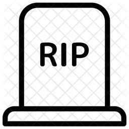

A 💀OtherSide Literatura é uma livraria/editora comprometida com a publicação do melhor da literatura de terror, tendo uma única
REGRA:
Somente publicar e vender livros de autores que estejam do Outro Lado, ou seja, para ser um 💀OtherSider o autor precisa estar no OtherSide!